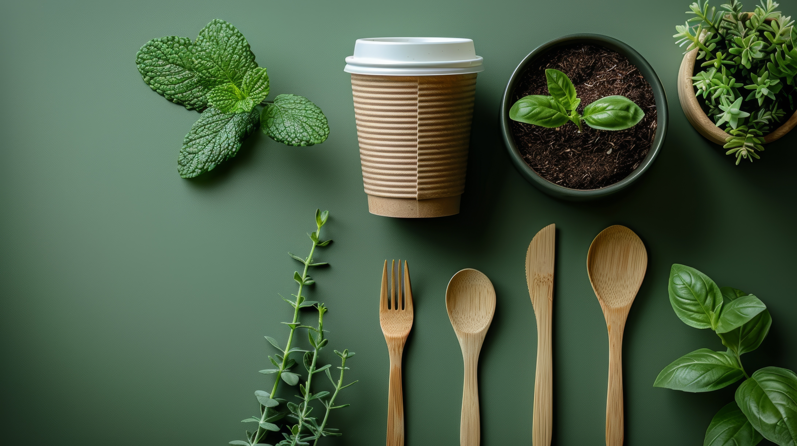
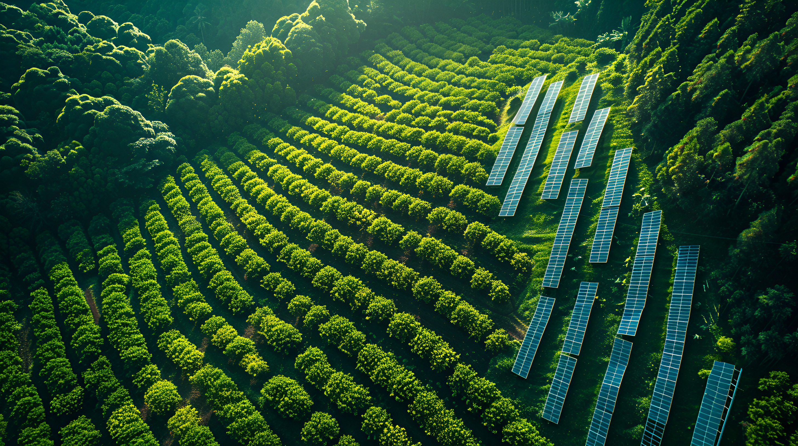
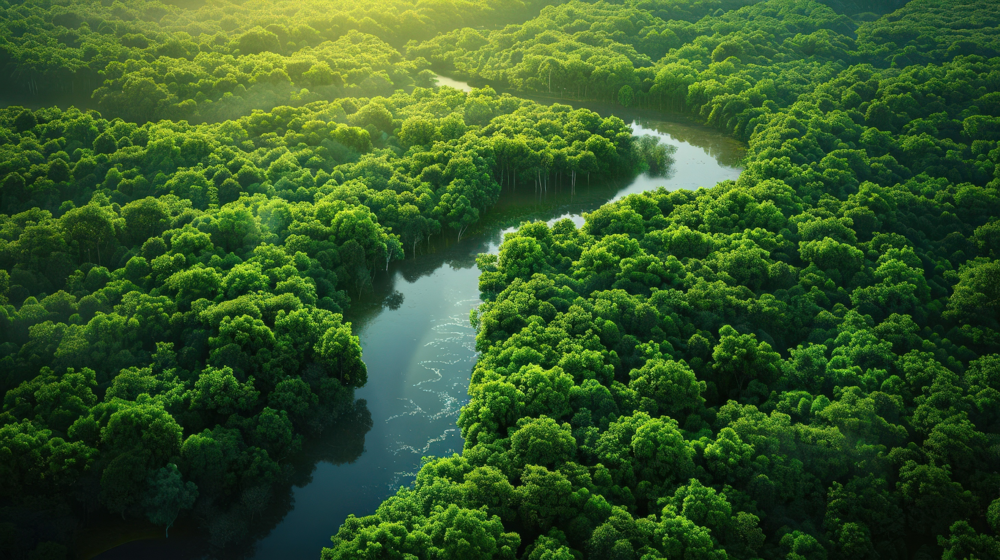
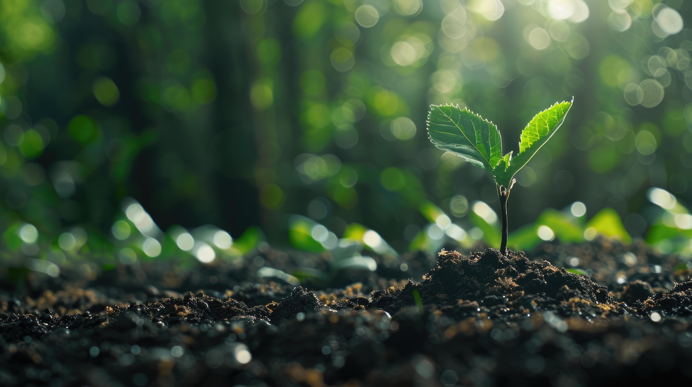

Nutrient-Rich Compost Ready for Planting

Fresh Produce in Eco-Friendly Bags

Harvesting Sunlight: Solar Flowers Blossom into Clean Energy

Nurturing Life in Biodegradable Pots

A harmonious blend of nature’s freshness and eco-conscious living

Community Hands for Green Lands

A Solar Farm

Exploring Nature’s Majesty

Nature’s First Step Towards Renewal